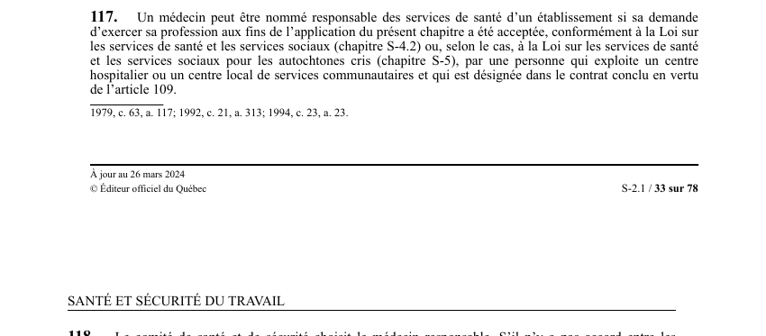

art-117-LSST : nomination du médecin responsable
Un article du wiki ⚖️ Recueil législatif
🌐 LegisQuébec · 📄 PDF officiel (page 33)
Texte officiel : capture du PDF

🔗 Ouvrir a cette page : LSST.pdf : page 33 · texte a jour au 26 mars 2024
En bref
Un médecin peut être nommé responsable des services de santé d'un établissement si sa demande d'exercer sa profession aux fins du chapitre a été acceptée. Il s'agit d'une obligation.
- Conformément à la Loi sur les services de santé et les services sociaux.
Voir aussi
- art. 115 : lieu fourniture services santé · les services de santé pour les travailleurs d'un établissement sont fournis dans l'établissement, dans une installation d'un centre hospitalier ou d'un CLSC, ou ailleurs si le directeur de santé publique le juge nécessaire.
- art. 116 : disposition abrogée · disposition-abrogée.
- art. 118 : choix médecin responsable comité · définition : le comité de santé et de sécurité choisit le médecin responsable; à défaut d'accord, la Commission le désigne après consultation du directeur de santé publique; s'il n'y a pas de comité, le directeur de santé publique désigne le médecin.
- art. 119 : durée nomination médecin responsable · la nomination du médecin responsable par le comité est valable pour quatre ans; une nomination faite par la Commission ou le directeur de santé publique est valable pour deux ans.
- 🔧 Modifié par : LMRSST · Article modificateur de la LMRSST.
- ↑ Loi : LSST
Pages qui pointent ici (9)
- art-115-LSST, services santé pour travailleurs Recueil législatif
- art-116-LSST, abrogé c a c Recueil législatif
- art-118-LSST, amende récidive Recueil législatif
- art-119-LSST, Commission Recueil législatif
- art-177-LMRSST, mod. art. 117 LSST Recueil législatif
- art-178-LMRSST, insertion LSST après art. 117 Recueil législatif
- LSST - Chapitre VII - Inspecteur de la CNESST et révision Recueil législatif
- LSST (programmes et inspection) Droit du travail
- PDFs Recueil législatif